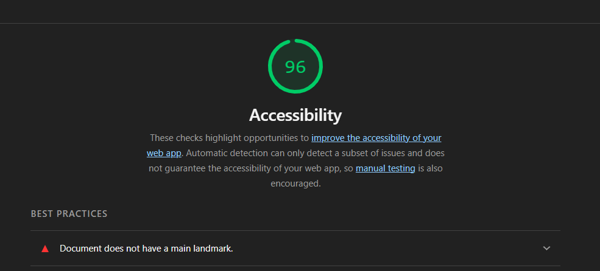
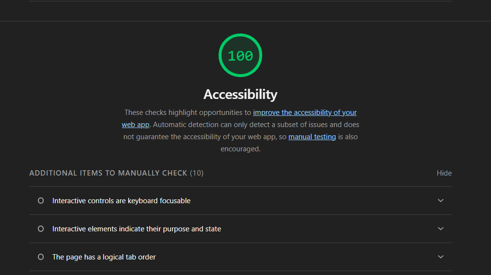

Website Accessibility Audit Report
This report explains how I checked my portfolio for accessibility problems, what I fixed, and how the result changed.
Purpose of the audit
An accessible website can be used by everyone, including people who use only a keyboard or a screen reader. I audited the homepage of my portfolio (https://fairshare123.github.io/Web_program_week2/) with Lighthouse in Microsoft Edge (Navigation mode, Mobile) and by testing it with only my keyboard. I used the same page and settings before and after the changes.
Original score
96 / 100
Lighthouse found one failed check: "Document does not have a main landmark."

Three accessibility fixes
- Added a main landmark. The main content is now inside
<main id="main-content">, so screen reader users can jump straight to it. - Made "Back to Weeks" keyboard accessible. It was a
<div>that only worked with a mouse. It is now a<button>. - Kept keyboard focus in the right place. Opening a week moves focus to its tasks, going back returns focus to the card, and
aria-expandedtells screen readers whether a week is open.
Lighthouse only detected the first problem. I found the other two by testing the page with my keyboard, because automatic tools cannot catch every accessibility problem. Full details and code are in my accessibility task.
Final score
100 / 100

Keyboard test
On the live site I pressed Tab once and the "Skip to main content" link appeared. Pressing Enter moved me to the main content. I could then open a week, move through its tasks and press "Back to Weeks" using only the keyboard.

Conclusion
My accessibility score went from 96 to 100 using the same page and settings. The biggest lesson was that Lighthouse
only finds some problems: two of my three fixes came from testing with my keyboard. I will add a skip link,
a <main> landmark and real buttons to my future pages from the start.